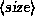
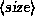

Before you can use your Linux partitions to store files, you must create filesystems on them. Creating a filesystem is analogous to formatting a partition under MS-DOS or other operating systems. We discussed filesystems briefly in Section 2.2.3.
There are several types of filesystems available for Linux. Each filesystem type has its own format and set of characteristics (such as filename length, maximum file size, and so on). Linux also supports several ``third-party'' filesystem types such as the MS-DOS filesystem.
The most commonly used filesystem type is the Second Extended Filesystem, or ext2fs. The ext2fs is one of the most efficient and flexible filesystems; it allows filenames up to 256 characters and filesystem sizes of up to 4 terabytes. In Chapter 4, we'll discuss the various filesystem types available for Linux. Initially, however, we suggest that you use the ext2fs filesystem.
If you are installing the Slackware distribution, filesystems are created automatically for you by the installation procedure described in the next section. If you wish to create your filesystems by hand, however, follow the procedure described here.
To create an ext2fs filesystem, use the command
mke2fs -c 

where  is the name of the partition, and
 is the size of the partition in blocks. For example, to
create a 82080-block filesystem on /dev/hda2, use the command
is the name of the partition, and
 is the size of the partition in blocks. For example, to
create a 82080-block filesystem on /dev/hda2, use the command
# mke2fs --c /dev/hda2 82080
If you're using multiple filesystems for Linux, you'll need to use the appropriate mke2fs command for each filesystem.
If you have encountered any problems at this point, see Section 2.5 at the end of this chapter.